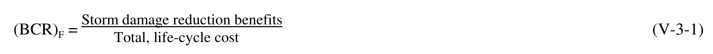
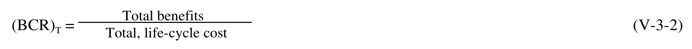
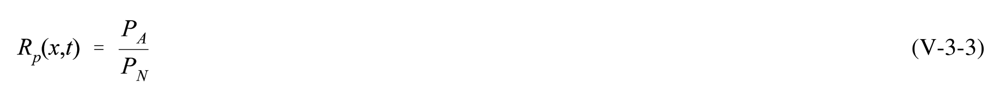
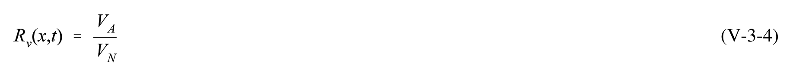
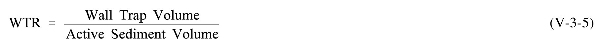
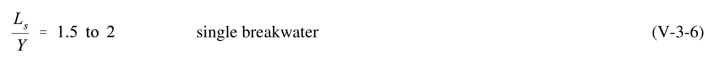
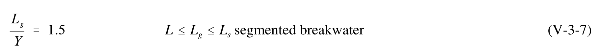
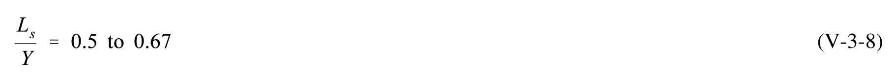
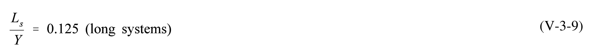
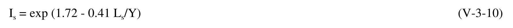

10 equations — 10 machine-verified, 0 flagged. Green = verified, amber = flagged (still shows best LaTeX + source crop).
| # | ID | Status | Rendered (KaTeX) | Source crop (PDF) |
|---|---|---|---|---|
| 1 | V-3-1 | agreed_gt | $$(BCR)_{F} = \frac{\text{Storm damage reduction benefits}}{\text{Total, life-cycle cost}}$$ |  |
| 2 | V-3-2 | agreed_gt | $$(BCR)_{T} = \frac{\text{Total benefits}}{\text{Total, life-cycle cost}}$$ |  |
| 3 | V-3-3 | agreed | $$R _ { p } ( x , t ) \ = \ \frac { P _ { A } } { P _ { N } }$$ |  |
| 4 | V-3-4 | agreed | $$R _ { \nu } ( x , t ) \, = \, { \frac { V _ { A } } { V _ { N } } }$$ |  |
| 5 | V-3-5 | agreed | $$WTR = \frac{Wall Trap Volume}{Active Sediment Volume}$$ |  |
| 6 | V-3-6 | agreed | $$\frac { L _ { s } } { Y } \, = \, 1 . 5 \, { \ t o \ 2 }$$ |  |
| 7 | V-3-7 | agreed | $$\frac{L_s}{Y} = 1.5 \quad L \leq L_g \leq L_s \text{ segmented breakwater}$$ |  |
| 8 | V-3-8 | agreed | $$\frac{L_s}{Y} = 0.5 \text{ to } 0.67$$ |  |
| 9 | V-3-9 | agreed | $$\frac{L_s}{Y} = 0.125 \text{ (long systems)}$$ |  |
| 10 | V-3-10 | agreed_gt | $$I_s = \exp(1.72 - 0.41 L_s/Y)$$ |  |